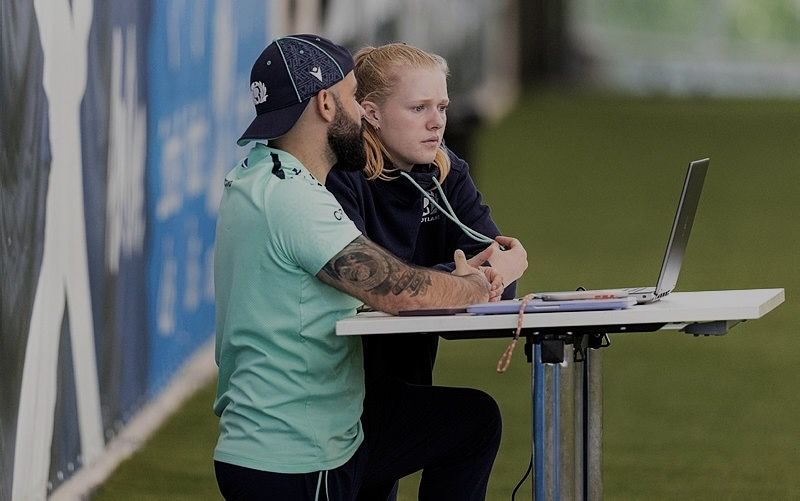
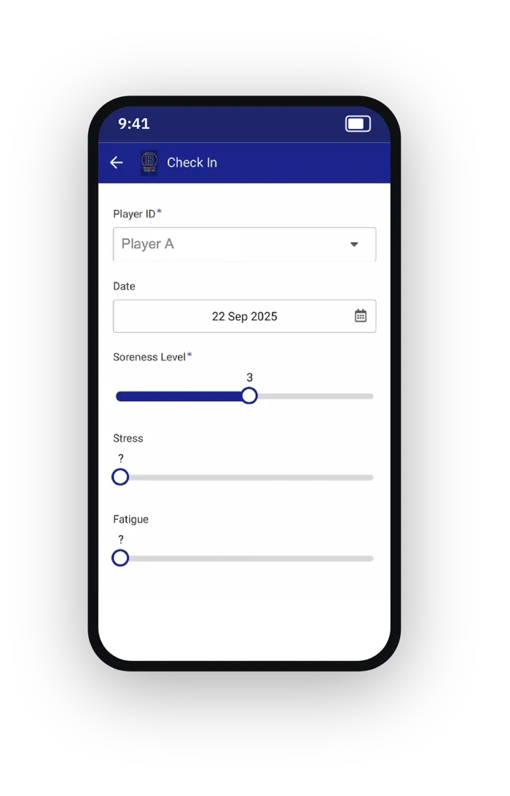
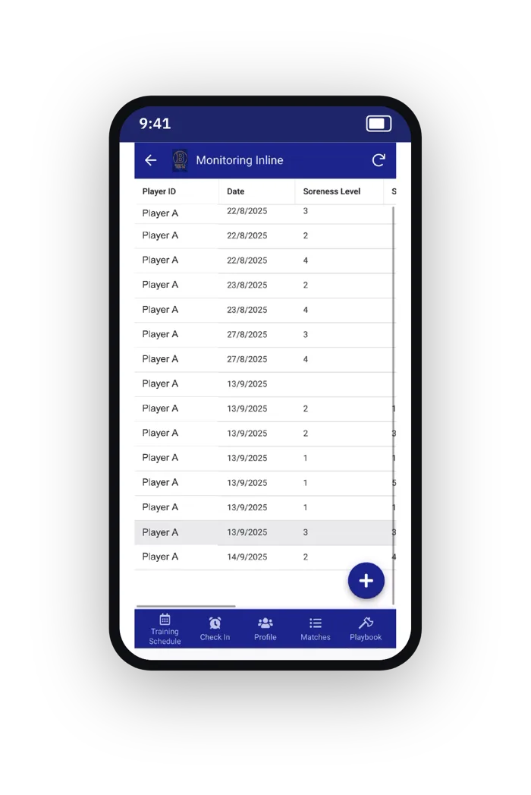
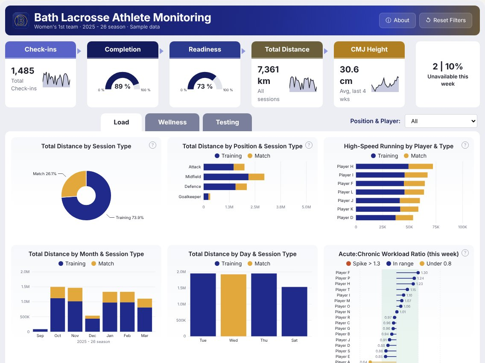
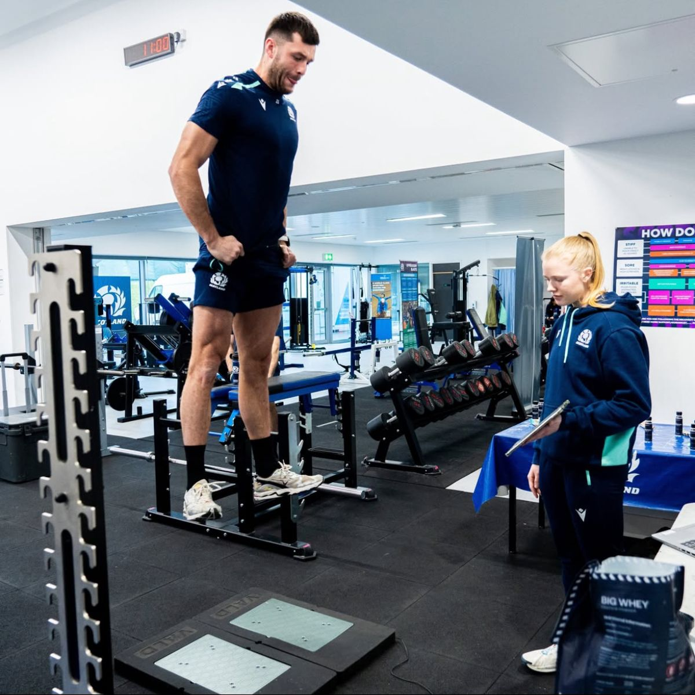
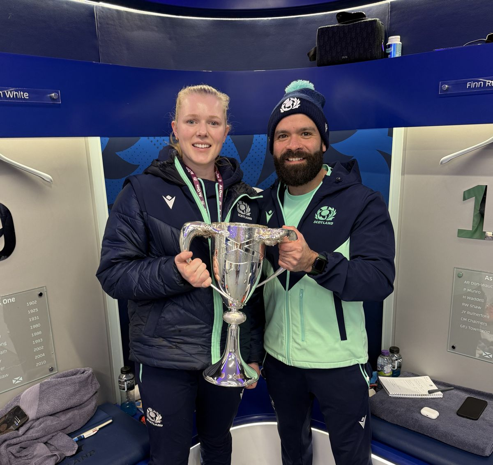
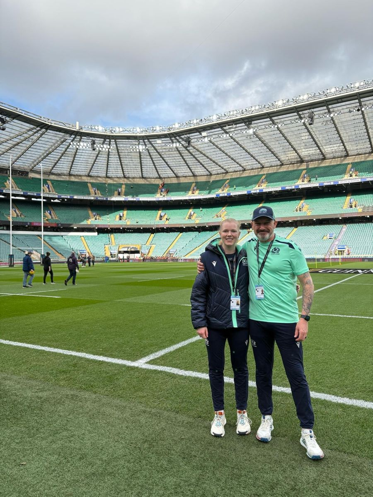

Athlete data, turned into decisions coaches act on.
I work where sports science meets data. GPS, force plates, motion capture and daily wellness, collected properly and reported clearly for coaching, medical and S&C staff.

Selected Work


A self-built wellness, load and injury tracking app used daily by a women's 1st team squad.
Motion capture and force plates with 20 athletes. The answer challenges a common coaching assumption.

The Power BI reporting style I built at Scottish Rugby, recreated for Bath Lacrosse. GPS load, wellness and CMJ in one report.
The overhand lacrosse shot
Kinematic and kinetic determinants of shot speed, accuracy and injury risk. Ball speed is driven by segmental sequencing and stick angular velocity. Foot orientation shapes joint loading.
Knee kinematics in the instep kick
Single-participant 3D motion capture study (Qualisys, 200 Hz) processed in Visual3D and analysed in SPSS. Dominant leg: 1466 vs 971 °/s peak knee extension velocity.
From the lab to the international pitch
A placement year inside an elite international environment, four years coaching and captaining at university, and my own international playing career. I know what the data has to do once it leaves the laptop.
Get in touch


Performance data and reporting
- Analysed GPS data from training and matches to inform load management for the Men's National Team.
- Led GPS data collection for team runs and relayed data to coaches and club teams, including Edinburgh and Glasgow.
- Built Power BI reports and dashboards that shaped training decisions week to week.
- Monitored strength and power with ForceDecks and GymAware during countermovement jumps.
- Analysed Women's National Team performance data and presented findings to coaches.
Applied support
- Independently ran Women's National Team sessions, including monitoring and testing.
- Supported recovery, load monitoring and return-to-play sessions with S&C and medical staff.
- Set up and monitored mouthguards in line with concussion protocols.
- Supported national academy testing in Glasgow (U18 and U20).
Highlights. Lead sports scientist for Scotland A vs Italy. Worked the Scotland vs England match. Men's team through the Autumn Nations Series and Six Nations. Women's team through the Six Nations and Rugby World Cup preparation.
What I did
- Designed and ran weekly training and strength and conditioning programming.
- Led selection and return-to-play decisions for the squad.
- Built the squad's wellness and load monitoring app and used the data to adapt sessions week to week.
- Coached lacrosse and tennis across age and skill levels.
- Qualified as an England Lacrosse Level 1 umpire.
Build the tool. Close the loop. Act on what it shows.
Data only matters if it changes what happens on the pitch. Every project I take on runs through the same four steps.
Capture
GPS, force plates, motion capture, timing gates and daily athlete check-ins. Collected with clean protocols so the numbers can be trusted.
Process
Visual3D pipelines, MATLAB and Python to turn raw signals into metrics such as eccentric RFD, braking force and training load.
Report
Power BI dashboards and clear visuals built for the people using them: coaches, medical staff and S&C.
Act
Load management, session changes and return-to-play support. Then measure again.
Data collection
Analysis
Reporting and building
Sports scientist. International athlete. Builder.
I'm from Edinburgh and graduated from the University of Bath with a BSc (Hons) in Sport and Exercise Science, specialising in biomechanics and coding. I'm now studying for an MSc in Sport Analytics and Artificial Intelligence at Loughborough University London.
I first saw how athlete data supports better decisions at elite level during my placement with Scottish Rugby. I've also lived it from the other side: I play lacrosse for Scotland, so I know what it feels like to be the athlete being monitored.
Loughborough University London. Machine Learning for Sport, Advanced Statistical Analysis for Sport, Human-Computer Interaction
University of Bath. Sports Biomechanics, Functional Anatomy and Biomechanics, Sports and Exercise Medicine
Scotland Women's National Sixes Team (2026). Scotland Women's B Team. U18 and U21 Home Internationals
Functional Fitness Coaching Level 2. British Weightlifting Coaching Level 1. England Lacrosse Umpiring Level 1
From describing what happened to predicting what happens next.
Let's talk performance data.
Open to roles and projects in athlete monitoring and performance analytics with clubs, federations and sports tech companies.
isabellasale212@gmail.com